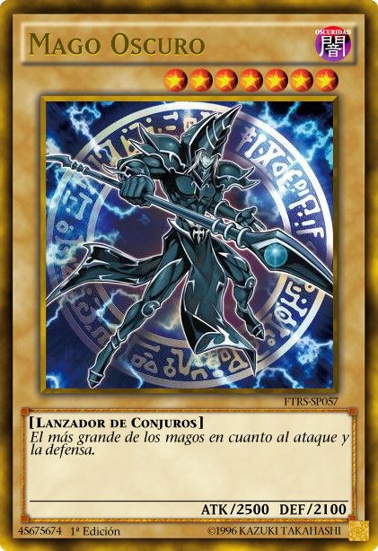
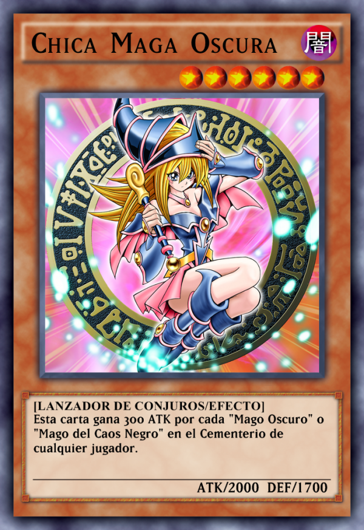

Monstruos
Los monstruos son las cartas usadas para atacar , estos deben ser invocados para poder atacar , exsisten 2 tipos de monstruos
Monstruos Normales: Estos son monstruos sin efecto que normalmente son de color amarilllo
Monstruos de Efecto: Estos son monstruos con una habilidad especial que se puede usar desde la mano, campo o cementerio
